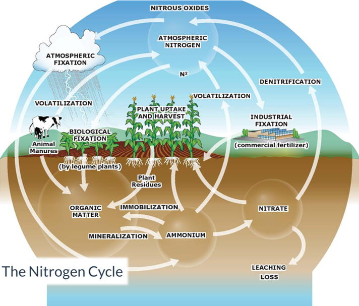
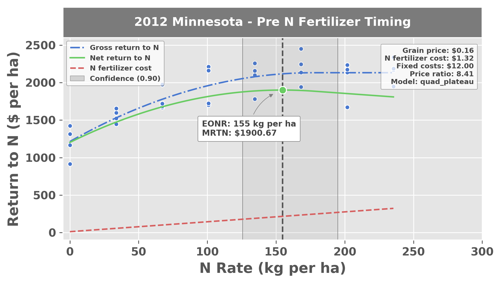
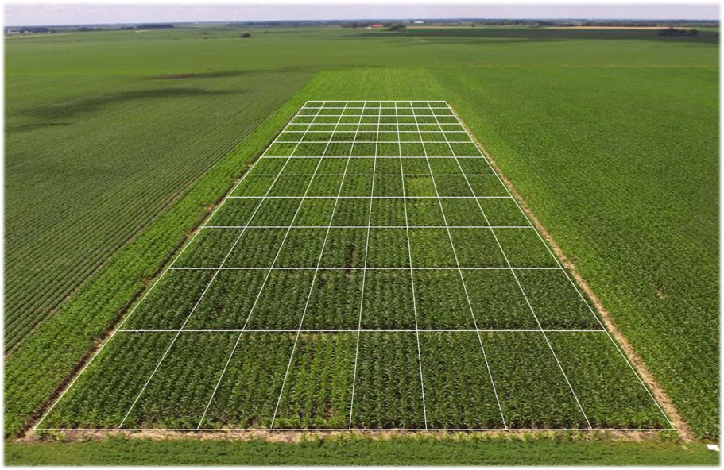

4. Background¶
4.1. Nitrogen fertilizer recommendations¶
The concept behind the Economic Optimum Nitrogen Rate approach (also referred to as the Maximum Return to Nitrogen approach) is to make the most favorable nitrogen fertilizer recommendation considering three variables:
Grain price ($ per kg)
Fertilizer cost ($ per kg)
Grain yield response to nitrogen fertilizer (modeled from input data)
4.1.1. Why nitrogen and not other nutrients?¶
Many crops, (e.g., corn, wheat, potatoes) depend on nitrogen fertilizer to achieve profitable yields. Although the same is true for other nutrients (e.g., phosphorus, potassium, sulfur, etc.), many would probably agree that nitrogen deserves special attention because it is usually required in high quantities, it can cause environmental harm, and it tends to be more difficult to manage because of its elusive behavior in the soil. A diagram describing the fundamental pathways among the different pools in the nitrogen cycle illustrates its complexity (Figure 1). When nitrogen is introduced to agricultural soils, either naturally or synthetically, it is immediately vulnerable to be lost. Some losses may be temporary, while others are permanent. When nitrogen is lost, it can contribute to environmental pollution and cause other damages related to health and quality of living. Nitrogen pollution can be present in both water (including groundwater, lakes, rivers, etc.) and in the air (as particulate matter or as nitrous oxides, which are strong greenhouse gases).

Figure 1: The nitrogen cycle
With so many potential loss pathways, it is no wonder why farmers care so much about the nitrogen they apply to their crops. The EONR tool is an attempt to support them, through economics-driven research.
4.2. EONR? MRTN? ..what?¶
As its name suggests, the Maximum Return to Nitrogen (MRTN) is the maximum achievable profit expected after accounting for the cost of nitrogen fertilizer. The economic optimum nitrogen rate (EONR) is the nitrogen rate where the MRTN is reached. In statistical terms, the EONR is the point where the monetary return from yield is equal to the cost of the increase in nitrogen fertilizer input. The approach uses a best-fit statistical model that utilizes input data from replicated field trials with several nitrogen rate treatments. Figure 2 is a typical nitrogen rate response curve for corn.

Figure 2: Plot generated from the EONR package. The blue points are observed experimental data (nitrogen rate vs yield return to nitrogen). Yield is expressed as monetary return, and is simply the grain price multiplied by grain yield. The blue line is the best-fit quadratic-plateau model representing gross return to nitrogen, the red line is the cost of nitrogen fertilizer, and the green line is the difference between the two and represents the net return to nitrogen.
A model is fit to the experimental data to describe the return to nitrogen for each particular dataset (e.g., quadratic, quadratic-plateau, etc.). Differences among replications from these trials can contribute to uncertainty in estimating the EONR, and this is illustrated by the rather wide confidence intervals on either side of the 162 kg ha\(^{-1}\) estimated EONR value (90% confidence bounds are 130 kg ha\(^{-1}\) and 208\(^{-1}\)). Although there is perhaps a lot of uncertainty in the EONR estimate, it is a good baseline for making nitrogen fertilizer recommendations for a given location or soil.
To generate an EONR/MRTN plot as in Figure 2, it is necessary to conduct a nitrogen response field experiment (Figure 3). Experiments can be “small-plot”, where it is more feasible to include more nitrogen rates and replications, or experiments can be “strip trials”, where experiments are generally easier to establish.

Figure 3: Aerial photo of a nitrogen rate response experiment for corn (photo captured in July when the crop is about shoulder-high).
Nitrogen deficiencies are visible in the small-plot experiment in Figure 3 (plot boundaries were rendered over the photo to visualize the individual plots more easily). The experiment in this photo had nine (9) nitrogen rates applied at three (3) different times during the season, and was replicated four (4) times.
4.3. The quadratic-plateau model¶
The quadratic-plateau model is often identified as the most appropriate model for nitrogen response in corn. It is a piecewise function that can be described as:
\begin{equation} y_i =\begin{cases}\beta_0 + \beta_1x_i + \beta_2x_i^2 + \epsilon_i & if\ x_i < \frac{-\beta_1}{2\beta_2} \\{\beta_0} - \frac{{\beta_1^2}}{4{\beta_2}} + \epsilon_i & if\ x_i \geq \frac{-\beta_1}{2\beta_2}\end{cases} \label{qp} \end{equation}
where \(y_{i}\) can represent grain yield (kg ha\(^{-1}\)) or monetary return ($ ha\(^{-1}\)) from grain yield, \(x_{i}\) represents quantity of nitrogen fertilizer applied, and \(\beta_{0}\), \(\beta_{1}\), and \(\beta_{2}\) are the coefficients estimated from the experimental data assuming identically and independently distributed errors, \(\epsilon_{i}\).
The point on the x-axis where the net return curve (green) reaches the maximum return is the EONR/MRTN. The profile-likelihood 90% CIs are illustrated as a transparent grey box surrounding the EONR/MRTN point.
4.4. The quadratic model¶
The quadratic model may be desireable if grain yield reaches a maximum, then begins to decline with increasing rates of nitrogen fertilizer (i.e., it exhibits a sort of toxicity effect). Compared to the quadratic-plateau model, the estimated ONR generally tends to be greater when using the quadratic model. It can be described as:
\begin{equation} y_i =\beta_0 + \beta_1x_i + \beta_2x_i^2 + \epsilon_i \label{q} \end{equation}
where \(y_{i}\) can represent grain yield (kg ha\(^{-1}\)) or monetary return ($ ha\(^{-1}\)) from grain yield, \(x_{i}\) represents quantity of nitrogen fertilizer applied, and \(\beta_{0}\), \(\beta_{1}\), and \(\beta_{2}\) are the coefficients estimated from the experimental data assuming identically and independently distributed errors, \(\epsilon_{i}\).
Quadratic models tend to be most popular in the literature, at least for describing how to calculate confidence intervals (CIs) for the EONR (Hernandez & Mulla, 2008; Sela et al., 2017). However, even in cases where a quadratic model happens to fit the observed data best, Cerrato & Blackmer (1990) imply that the idea of using the quadratic model for maize is absurd because it predicts rapid decreases in yields when fertilizer is applied at higher than optimal rates, a trend that is not generally supported by evidence for maize. Furthermore, the quadratic model produces a systematic bias of overestimated maximum grain yield and optimum nitrogen fertilizer rate (Bullock & Bullock, 1994).
4.5. Confidence intervals¶
One of the major novelties of the EONR package is that it calculates profile-likelihood CIs (as well as Wald and bootstrap CIs) from data fit by the model.
From a scientific perspective, it is widely recognized that large uncertainties exist around the estimated EONR computed from yield data and that it is essential to report CIs. Still, few examples exist in the agronomic literature where CIs are actually estimated (Bachmaier & Gandorfer, 2009; Hernandez & Mulla, 2008; Jaynes, 2011; Sela et al., 2017; Qin et al., 2018. Of these examples, only Jaynes (2011) calculated CIs for the quadratic-plateau response function (which has generally been recognized as the most appropriate model for describing yield response to nitrogen in corn). Hernandez & Mulla, 2008 describe three general methods that can be used for estimating CIs about the EONR:
the profile-likelihood based CI
a bootstrap-derived CI
the Wald CI
4.5.1. Profile-likelihood¶
The profile-likelihood is the most accurate of any of the approaches (requires reparameterization). The profile-likelihood confidence intervals are computed according to the following general steps:
Fit a model (e.g., quadratic-plateau, quadratic, etc.) to the observed data and calculate the sum of squared errors (refered to as the sum of squared errors of the “full” model, \(SSE(\hat{\theta_{2}})\)).
Calculate the \(SSE\) of the model subject to the constraint that \(\theta_{2}\) (the parameter representing the optimum nitrogen rate) has a fixed value (refered to as the sum of squared errors of the “reduced” model, \(SSE(\tilde{\theta_{2}})\)).
The likelihood ratio statistic succinctly expresses how much more likely the fit of the full model is than reduced model. Calculate the likelihood ratio statistic to quantify the difference between the full and reduced model:
\begin{equation} \tau(\theta_{2}) = \frac{{(SSE(\tilde{\theta_{2}})-SSE(\hat{\theta_{2}}))}}{SSE(\hat{\theta_{2}})/(n-p)} \label{tau_lr} \end{equation}
where \(n\) is the number of observations and \(p\) is the total number of parameters in the model (i.e., \(p\) = 3 for the quadratic-plateau model).
Invert the likelihood ratio statistic to obtain a confidence interval about the full model for \(\theta_{2}\). That is, for a given \(\alpha\) level of significance, the profile-likelihood CI for \(\theta_{2}\) is the set of all \(\tilde{\theta_{2}}\) for which:
\begin{equation} \tau(\theta_{2}) \leq Q(t_{d}, f) \label{tau_inv} \end{equation}
where \(d\) is the degrees of freedom and \(Q({t_{d}, f})\) is the \({f}\)th quantile of the \({t}\)-value distribution (\(t_{d}\)).
Because \(\tilde{\theta_{2}}\) was intentionally set away from \(\hat{\theta_{2}}\) (step 2), any increase in \(SSE(\tilde{\theta_{2}})\) compared to \(SSE(\hat{\theta_{2}})\) is derived from \(\theta_{2}\) instead of any of the other model parameters. Because \(SSE(\tilde{\theta_{2}})\) should never be less than \(SSE(\hat{\theta_{2}})\), \(\tau(\theta_{2})\) is a positive value for both the lower and upper confidence interval.
The algorithm for computing the profile-likelihood confidence intervals iteratively checks all \(\tau(\theta_{2})\) that are less than or equal to the test statistic for the given \(\alpha\) value. The EONR package uses the Nelder-Mead optimization algorithm (Nelder & Mead, 1965) to efficiently find the confidence interval.
4.5.2. Bootstrapping¶
Bootstrapping involves sampling residuals of the original data with replacement (requires reparameterization similar to the profile-likelihood approach). This is a worthy alternative to the profile-likelihood approach, but it is not always perfect.
4.5.3. Wald-type (+/- 1 standard error)¶
The Wald-type approach is the simplest, but it has poor performance with small sample sizes and nonlinear models. \begin{equation} \hat{\theta} = Q(t_{d}, 1-\alpha/2)\:{SE}(\hat{\theta}) \label{wald} \end{equation}
Where \(\hat{\theta}\) is the parameter estimate, \({d}\) is the degrees of freedom, \({d=n-k,n}\) is the number of observations, \(Q({t_{d}, f})\) is the \({f}\)th quantile of the \({t}\)-value distribution (\(t_{d}\)) with \({k}\) treatments, and \({SE}(\hat{\theta})\) is the standard error of the parameter estimate (Cook & Weisberg, 1990; Hernandez & Mulla, 2008).
4.6. The social cost of nitrogen¶
The EONR package also allows the user to define a social cost of nitrogen, which is then used in the optimum nitrogen rate calculations based on residual soil nitrogen (nitrogen fertilizer not taken up by the crop at the end of the season).
The traditional approach for calculating the EONR considers only the cost of the nitrogen fertilizer product, and does not consider other unintended costs of nitrogen application. The social cost of nitrogen, defined as the present value of monetary damages caused by an incremental increase in nitrogen, has been suggested as a method to place a value on pollution and other damages (e.g., health, quality of living, etc.) caused by nitrogen fertilizer application (Keeler et al., 2016). Because of the complexity of the nitrogen cycle and the spatial and temporal variability associated with it, the social cost of nitrogen is extremely difficult to quantify and is fraught with uncertainty. Additionally, the basis for what might be considered a healthy environment or an acceptable quality of living is highly subjective and may change abruptly depending on many factors. The social cost of nitrogen is a straightforward concept, however, and it can be a useful method to assess the value of economic gain versus damages from agricultural production.
When total nitrogen uptake is measured in field experiments, there is an opportunity to calculate the quantity of nitrogen that we know was not utilized by the crop (residual nitrogen). EONR uses crop nitrogen uptake (and optionally, nitrogen in the soil at the beginning of the season) to model end-of-season residual nitrogen as a function of crop-available nitrogen at the beginning of the season (including nitrogen applied as fertilizer). This residual nitrogen value can be multiplied by a
social cost (per unit residual nitrogen) to determine the monetary damages that a given experimental treatment might be contributing to pollution or other damages caused by nitrogen fertilizer application. EONR then adjusts the optimum nitrogen rate after also considering these social costs derived from experimental data. This is meaningful because it provides a basis for analyzing the costs of pollution and other damages caused by nitrogen fertilizer at the field scale. Although analysis at
the regional scale is worthwhile, results oftentimes to not translate to the field scale.
Depending on the economic scenario defined by the user EONR will calculate one of the following:
Agronomic Optimum Nitrogen Rate (AONR): both the cost of nitrogen fertilizer and social cost of nitrogen are ignored
Economic Optimum Nitrogen Rate (EONR): cost of nitrogen fertilizer is considered but social cost is ignored
Socially Optimum Nitrogen Rate (SONR): both cost of nitrogen fertilizer and social cost of nitrogen are considered
The EONR package is able to calculate the AONR, EONR, or SONR for your dataset by simply adjusting the economic scenario (i.e., by adjusting price_grain, cost_n_fert, cost_n_social, and even costs_fixed).